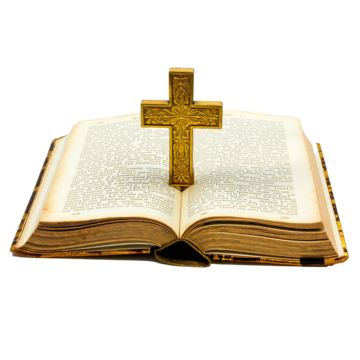
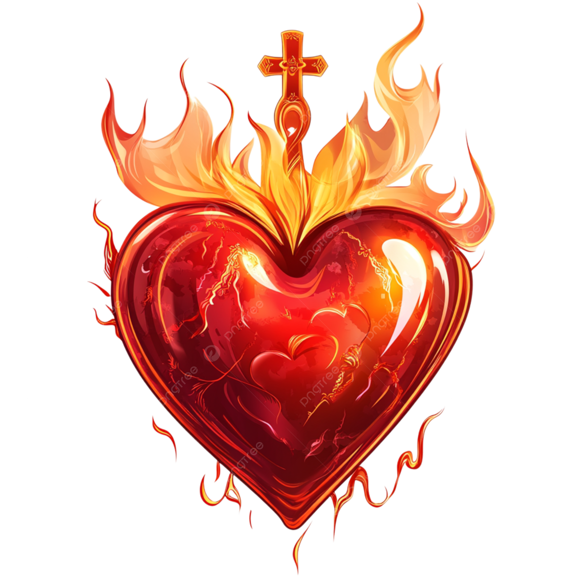
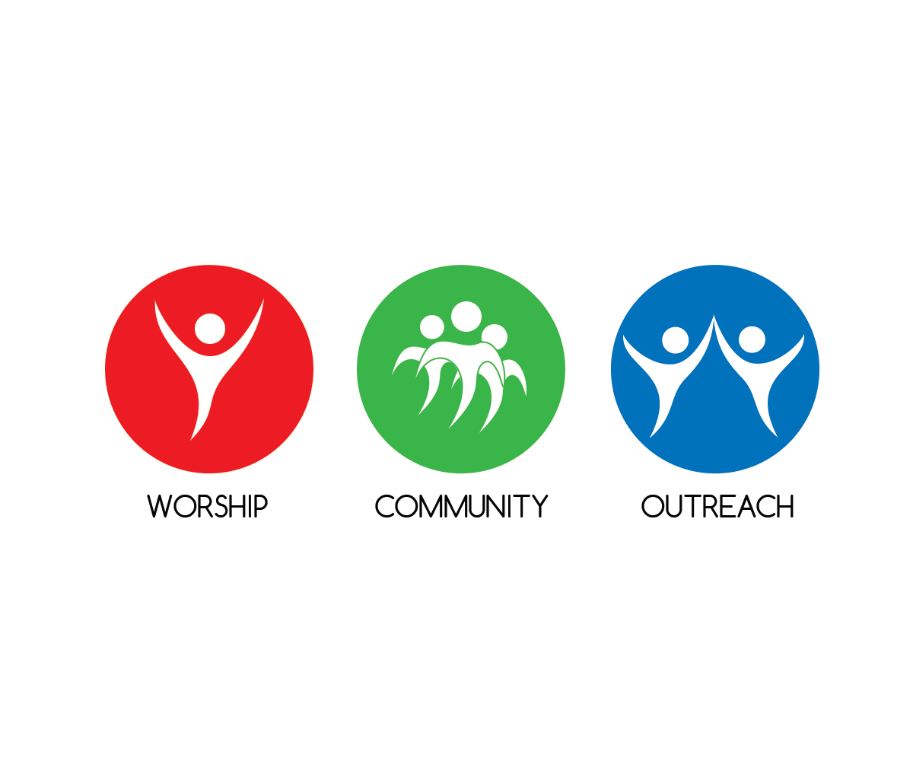
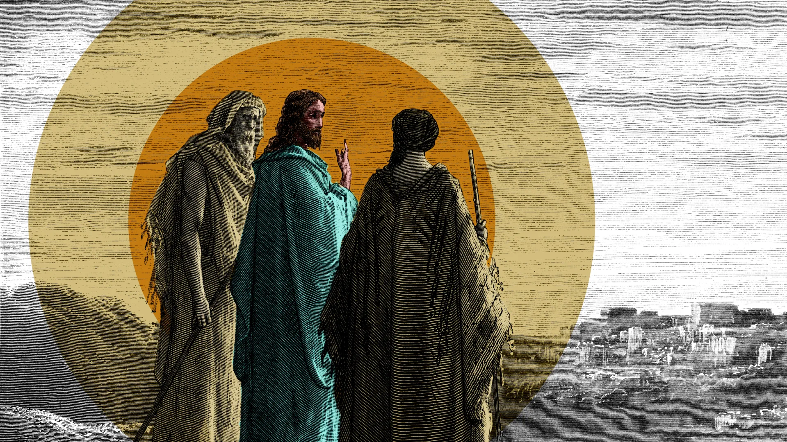

Meeting Jesus in His Word and the Eucharist
Opening: What People Are Really Looking For
The Hunger Around Us
Look around our world today. People are busier than ever, more connected than ever, but also emptier than ever. They're searching for something real, something that matters, something that will fill the aching void in their hearts.
They try everything—success, relationships, entertainment, shopping, travel. But nothing works for long. Why? Because they're looking for God, even when they don't know it. St. Augustine understood this: "Our hearts are restless until they rest in You."
Your Beautiful Calling
This is where you come in, dear sisters. You've given your lives to show the world that God is real, that He loves us, and that He wants to be close to us. You are living proof that a life centered on Jesus brings real joy and peace.
But here's the thing—people won't believe this just because you say it. They need to see it in how you live. They need to see that your relationship with Jesus is real, alive, and transforming.
The Big Question
So the question is: How do we keep our relationship with Jesus fresh and real? How do we encounter Him every day, not just think about Him or work for Him, but actually meet Him?
The answer is simple but profound: We meet Jesus most clearly in two places—in His Word and in the Eucharist. These aren't just religious activities. They're real encounters with the living God.
📖 I. Meeting Jesus in Scripture
More Than Just Reading
When we open the Bible, we're not just reading an old book. We're opening the door for a conversation with God. Dei Verbum reminds us that "the books of Scripture must be acknowledged as teaching solidly, faithfully and without error that truth which God wanted put into sacred writings for the sake of salvation."
When God speaks in Scripture, He's not speaking only to people who lived 2,000 years ago. He's speaking to you, right now, today. Jesus said, "I am the Word." So when we read Scripture prayerfully, we're not just learning about Jesus—we're actually meeting Jesus. The Word is alive and active, as the Letter to the Hebrews tells us.
The Church's Wisdom on Scripture
This means that when you read Scripture, you're entering into an ongoing conversation that God is having with His Church. You're not alone in this—the Holy Spirit is leading you into truth, making Christ's word dwell abundantly in you.
Newman's Understanding of Scripture and Tradition
Cardinal John Henry Newman offers us profound insight into how Scripture works in the life of faith. In his Essay on the Development of Christian Doctrine, Newman shows us that Scripture is not merely a historical document but a living word that continues to unfold its meaning through the Spirit's guidance in the Church.
Newman understood that "the sacred volume is intended to guard the deposit of faith, not to give lessons in history or philosophy." When we approach Scripture in prayer, we're not primarily seeking academic knowledge but spiritual nourishment and personal encounter with the living God.
Praying with Scripture: Lectio Divina
The Church has given us a beautiful way to pray with Scripture called lectio divina. It's like having a conversation with a friend, but that friend is God.
Instead of rushing through passages, we slow down. We read with our hearts, not just our minds. We listen for God's voice speaking personally to us through His Word.
Take John 15:5: "I am the vine, you are the branches. Whoever remains in me and I in him will bear much fruit, because without me you can do nothing."
Maybe the word "remain" jumps out at you. Don't rush past it. Stay with it. What does it mean to remain in Jesus today? What pulls you away from Him? Talk to Jesus about it. Ask Him to help you. Then just rest in His presence and let Him love you.
Fr. Lucien Legrand's Missionary Perspective
Fr. Lucien Legrand, the renowned biblical scholar and missiologist, offers us crucial insight into how Scripture prepares us for mission. In his work on the Gospel of Matthew, he shows how Jesus' own relationship with Scripture shaped His ministry and how our encounter with the Word must do the same.
Legrand emphasizes that "the Word of God is not given to us for our private edification alone, but to transform us into witnesses." When we read Scripture contemplatively, we're not withdrawing from the world but being prepared to engage it more deeply with Christ's own vision.
The Gift of Silence
One of the most important aspects of encountering Jesus in Scripture is learning to embrace silence. Silence is the language of God. In our noisy world, we've almost lost the ability to be still. But silence isn't empty—it's full of God's presence.
When you read Scripture and then sit in silence, you're creating space for God to speak to your heart in ways that go beyond words. Sometimes the most profound encounters with Jesus happen not when we're talking, but when we're simply being present with Him. Think of Mary, who "pondered all these things in her heart." She wasn't constantly analyzing or discussing—she was treasuring, holding, listening in the depths of her being.
✝️ II. Meeting Jesus in the Eucharist

Not Just a Symbol—A Real Presence
The Eucharist is not a mere symbol or reminder of Jesus. It is Jesus—Body, Blood, Soul, and Divinity. As the Catechism of the Catholic Church teaches:
This is not a poetic metaphor. This is a mystery of faith. Through transubstantiation, the bread and wine become the Body and Blood of Christ, though the appearances of bread and wine remain.
We do not consume Christ in a physical, earthly sense. Rather, we receive the glorified Christ, risen and present sacramentally. This is not cannibalism. It is communion—an intimate union with the Risen Lord.
The Greatest Gift
The Eucharist is the most amazing gift God has given us. Think about it—God became man so He could be close to us. But even more than that, He found a way to actually become our food. In the Eucharist, we don't just think about Jesus or remember Jesus. We receive Jesus Himself.
The Real Presence: Clear Church Teaching
I need to be very clear about this because there's confusion today. A recent study found that 70% of Catholics think the Eucharist is just a symbol, just bread that reminds us of Jesus. But that's not what the Church teaches. That's not what Jesus said.
The Council of Trent definitively taught that in the Eucharist, "by the consecration of the bread and wine there takes place a change of the whole substance of the bread into the substance of the body of Christ our Lord and of the whole substance of the wine into the substance of his blood. This change the holy Catholic Church has fittingly and properly named transubstantiation."
Listen to Jesus' own words in John's Gospel: "Unless you eat the flesh of the Son of Man and drink His blood, you have no life in you." When people found this hard to accept and started walking away, did Jesus soften His words? Did He say, "Wait, I was just speaking symbolically"? No. He let them go. This teaching was that important.
Modern Theological Insights
Contemporary theologians help us understand the depth of this mystery. Edward Schillebeeckx helps us understand how the Eucharist functions as what he calls a "real symbol." Unlike empty symbols that merely point to absent realities, the Eucharist is a symbol that contains and makes present what it signifies.
Henri de Lubac's magnificent work Corpus Mysticum shows us how the Eucharist creates the Church. We don't just receive Jesus individually; we become the Body of Christ together. As he writes, "The Eucharist makes the Church, and the Church makes the Eucharist."
The Word and Eucharist United
The Word and the Eucharist are not separate; they're two parts of one divine feast. In the Liturgy of the Word, Jesus feeds us with His truth. In the Liturgy of the Eucharist, Jesus feeds us with His very self.
Newman's Eucharistic Vision
Cardinal Newman's understanding of the Eucharist was deeply personal and transformative. In his Parochial and Plain Sermons, he writes about the Eucharist as "the one great action which befits a Christian." For Newman, the Mass was not merely a service we attend but the central action of Christian life—both our highest privilege and our greatest responsibility.
Newman understood that in the Eucharist, "Christ vouchsafes to repeat, in each of us severally, those gracious acts which He wrought once for all for the whole world." This means that every Mass is not just a remembrance of Calvary but a participation in it.
Personal Encounter and Growth
The Eucharist is not something we attend or observe. It is Someone we meet. When you receive Jesus in the Eucharist, you are being embraced by the One who created you, redeemed you, and longs to dwell in you.
The great writer Flannery O'Connor once put it perfectly. When someone called the Eucharist "a wonderful symbol," she responded: "If it's only a symbol, to hell with it." She wasn't being crude—she was being honest. If it's only a symbol, why give your life to it? But if it's really Jesus, then it changes everything.
Here's why this matters for you as sisters: You are what you eat. If we just eat symbols, we stay the same. But when we eat Jesus' true Body and Blood, we become like Him. We're transformed from the inside out. We become living carriers of Christ to the world.
🔥 III. Bringing It All Together: Living What We Receive
Two Sides of One Coin
Scripture and Eucharist aren't two separate things. They're two parts of one beautiful whole. Dei Verbum teaches us that both Scripture and Eucharist make Christ present to us: In lectio divina, we listen to Jesus speak. In the Eucharist, we receive Jesus Himself. Both transform us from the inside out.
St. Jerome said it perfectly: "We eat the flesh of the Lord in listening to His Word." The Word prepares us for the Eucharist; the Eucharist gives us strength to live the Word.
The Heart of Vatican II's Vision
This integration of Word and Sacrament isn't just for liturgy—it's meant to transform our entire lives. When we regularly encounter Jesus in Scripture and Eucharist, something wonderful happens—we start seeing Him everywhere. This is what St. Ignatius called "finding God in all things."
The Universal Call to Holiness
Lumen Gentium teaches that "all the faithful of Christ of whatever rank or status, are called to the fullness of the Christian life and to the perfection of charity." As religious, you have a special role in showing the world what this fullness looks like when lived through deep encounter with Christ in Word and Sacrament.
Your daily rhythm becomes a lived theology:
Contemporary Theological Perspectives
Theologian Jean-Luc Marion's work on "the saturated phenomenon" helps us understand how both Scripture and Eucharist overflow with meaning that we can never fully grasp. This is why our response to both Word and Sacrament must be contemplative rather than analytical.
Hans Urs von Balthasar's theological aesthetics reminds us that beauty is often the first way people encounter God. When your life is deeply rooted in Scripture and Eucharist, a certain beauty emerges—not external prettiness, but the beauty of truth lived authentically.
Joseph Ratzinger's (Pope Benedict XVI) Introduction to Christianity offers the insight that faith is not primarily about believing propositions but about trust in a Person. When you encounter Jesus personally in Scripture and Eucharist, you're not just learning about Christianity—you're entering into relationship with Christ Himself.
The Daily Rhythm
Try to create a rhythm that connects Word and Eucharist, following the Council's vision of constant conversation with God:
When It's Hard
Let's be honest—this isn't always easy. Some days Scripture feels dry. Some days Mass feels routine. Some days you don't feel God's presence at all.
That's normal and that's okay. Dei Verbum reminds us that "there is a growth in the understanding of the realities and the words which have been handed down. This happens through the contemplation and study made by believers, who treasure these things in their hearts." Sometimes treasuring means simply being faithful when feelings aren't there.
God doesn't love you less on those days. Sometimes the most important prayer is just showing up, even when you don't feel like it. Faithfulness matters more than feelings.
Newman's Dark Night
Newman himself went through periods of spiritual dryness and doubt. His honest wrestling with faith, especially during his conversion from Anglicanism to Catholicism, shows us that doubt is not the enemy of faith but can be part of its deepening.
In his Apologia Pro Vita Sua, Newman writes, "We must make up our minds to be ignorant of much, if we would know anything." This applies to our spiritual life too. Sometimes the most profound growth happens precisely when we can't see or feel God's presence but continue to trust anyway.
Sharing the Joy
When you truly encounter Jesus in Word and Eucharist, you can't keep it to yourself. The Council teaches that "the Church constantly moves forward toward the fullness of divine truth." You are part of this movement when you live what you receive.
People will notice something different about you:
You don't have to preach sermons. Your life becomes the sermon. Your joy becomes the invitation.
🌍 IV. Your Mission in Today’s World
What the World Needs
Our world is hungry for what you have. People are drowning in information but starving for wisdom. They're connected to everyone but close to no one. They have everything they thought they wanted but nothing that satisfies.
Gaudium et Spes reminds us that "the Church has always had the duty of scrutinizing the signs of the times and of interpreting them in the light of the Gospel." The signs of our times show a deep spiritual hunger that only authentic encounter with Christ can satisfy.
But here's what's heartbreaking: many Catholics don't even know what they have. They go to Mass week after week thinking they're just participating in a nice ritual. They don't realize they're encountering the living God.
This is where your witness becomes crucial. When people see sisters who truly believe in the real presence of Jesus in the Eucharist, who approach Communion with reverence and joy, who live differently because of what they receive—that's powerful evangelization.
How People Come to Believe
Faith isn't primarily taught—it's caught. People come to believe in Jesus because they see someone whose life has been changed by Him. That's you. When your life radiates peace, hope, joy, and love, you're showing the world what life with Jesus looks like.
Evangelii Nuntiandi says it well: "Modern man listens more willingly to witnesses than to teachers, and if he does listen to teachers, it is because they are witnesses." Your joy, your calm in suffering, your patience in difficulties—these speak volumes.
Being Missionary Sisters
Mission isn't just something we do—it's who we are. As Pope Francis reminds us, "We are all missionary disciples." Every moment of your day can become mission:
These are missionary moments. They show Jesus to the world. You don't need a microphone. You just need authenticity and love.
A New Pentecost
The world needs another Pentecost—another outpouring of the Holy Spirit. And do you know where that starts? With people like you, who are on fire with love for Jesus. When the fire of the Spirit burns in your heart, others will be drawn to the warmth.
Pope St. Paul VI prayed for this: "Let there be no lessening of the missionary thrust that has always been present in the Church. May it be intensified and directed to the modern world with new fervor and methods."
Let your life be a living Pentecost. Let people who meet you feel that they've met Jesus. Let your Eucharistic joy and Scriptural fire ignite something new in your community, your parish, and beyond.
🙏 V. Conclusion: The Road to Emmaus
Walking with Jesus
Like the disciples on the road to Emmaus, we may walk through confusion and doubt. But Jesus draws near. He walks with us, even when we don't recognize Him at first. And just as He explained the Scriptures and broke the bread, He continues to do that for us today—in every Mass, in every moment of prayer, in every quiet act of trust.
That story in Luke 24 is not just a memory; it's a model. When the disciples invited Jesus to stay with them, their eyes were opened in the breaking of the bread. Their hearts burned within them as He spoke. This is our invitation too—to invite Jesus to stay, to open our hearts to His Word, and to meet Him in the Eucharist.
And what did they do next? They ran to share the Good News. When we've truly encountered Jesus, we cannot keep it to ourselves. We become missionary disciples—just like them.
So walk the road with confidence. Jesus is already beside you. Listen to His voice in Scripture. Receive Him in the Eucharist. Let your heart burn again. Then go—and tell others what you've seen, what you've heard, and whom you've met.
Closing Prayer:
Lord Jesus, you are the Word made flesh and the Bread of Life. Help us to meet you daily in Scripture and in the Eucharist. Kindle in us the same fire You gave the disciples on the road. Open our eyes to recognize You in the breaking of the bread. Deepen our hunger for Your Word. Strengthen our faith, even in the dark. Transform us into joyful witnesses of Your love.
May we carry You into the world—not only in our words, but in our lives. Stay with us, Lord. And let our hearts always burn for You. Amen.
- How has Scripture become more personal to you recently?
- What does receiving Jesus in the Eucharist mean to you today?
- Where is God calling you to be His witness?
- How can silence help you deepen your relationship with Jesus?
- Dei Verbum – Divine Revelation
- Lumen Gentium – Church’s Nature
- Gaudium et Spes – Modern World
- Ad Gentes – Missionary Activity
- Evangelii Gaudium – Joy of the Gospel
- Christifideles Laici – Lay Faithful
- Sacrosanctum Concilium – Liturgy